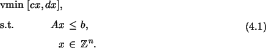
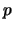
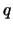
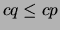
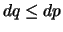

For those readers not familiar with bicriteria integer programming, we briefly
review the basic notions here. For clarity, we restrict the discussion here to
pure integer programs (ILPs), but the principles are easily generalized. A
bicriteria ILP is a generalization of a standard ILP presented earlier that
includes a second objective function, yielding an optimization problem of the
form

The operator vmin is understood to mean that solving this program is
the problem of generating efficient solutions, which are these feasible
solutions  to (4.2) for which there does not exist a second
distinct feasible solution  such that
 and
 and at
least one inequality is strict. Note that (4.2) does not have a
unique optimal solution value, but a set of pairs of solution values called
outcomes. The pairs of solution values corresponding to efficient
solutions are called Pareto outcomes. Surveys of methodology for for
enumerating the Pareto outcomes of multicriteria integer programs are provided
by Climaco et al. [8] and more recently by Ehrgott and
Gandibleux [12,13] and Ehrgott and
Wiecek [14].
The bicriteria ILP (4.2) can be converted to a standard ILP by
taking a nonnegative linear combination of the objective
functions [18]. Without loss of generality, the weights can be
scaled so they sum to one, resulting in a family of ILPs parameterized by a
scalar
 , with the bicriteria objective function replaced
by the weighted sum objective
, with the bicriteria objective function replaced
by the weighted sum objective
SYMPHONY 5.0 contains a generic implementation of the algorithm described in [33], along with a number of methods for approximating the set of Pareto outcomes. To support these capabilities, we have extended the OSI interface so that it allows the user to define a second objective function. Of course, we have also added a method for invoking this bicriteria solver called multiCriteriaBranchAndBound(). Relaxing the uniform dominance requirement requires the underlying ILP solver to have the ability to generate, among all optimal solutions to a ILP with a primary objective, a solution minimizing a given secondary objective. We added this capability to SYMPHONY through the use of optimality cuts, as described in [33].
Because implementing the algorithm requires the solution of a sequence of ILPs that vary only in their objective functions, it is possible to use warm starting to our advantage. Although the linearization of (4.4) requires modifying the constraint matrix from iteration to iteration, it is easy to show that these modifications cannot invalidate the basis. In the case of enumerating all supported outcomes, only the objective function is modified from one iteration to the next. In both cases, we save warm start information from the solution of the first ILP in the sequence and use it for each subsequent computation.